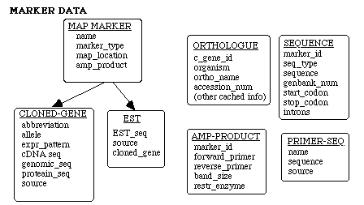

The notion of “map markers” broadly includes any genetic material that can be used to sort the genotype of the offspring of a cross, including cloned genes, RAPDs, SSCPs, RFLPs, STSs, ESTs, and mapped mutations. The schema we have constructed to represent this information has become somewhat abstract, moving away from a one-to-one correspondence between the above entities and representative data classes. Rather, we have a more general, distributed representation of genetic information which capitalizes efficiently on the commonalties of these components. A given gene, for instance, is not represented as a single record in some GENE table, but is dynamically generated by drawing the information associated with that gene from several closely-related tables. The main advantages of this approach is that it allows us to (a) representationally factor out entities (e.g. sequences) common to all Map Markers and (b) avoid the abundance of NULL fields that would result in many records from forcing the various kinds of map markers into one or two general data classes.
As indicated in the above diagram, the data model supports description of three related categories of map markers: Cloned Genes, ESTs, and generic map markers.
Generic Map Markers represent all markers that are not cloned genes or ESTs; namely, RAPDs, STSs, RFLPs, and SSCPs. In terms of content, Generic Map Markers are created by instantiating the MAP_MARKER class, which captures information associated with all map markers (i.e., there are no attributes that generic map markers have that are not shared by cloned genes and ESTs as well). As shown in the above diagram, generic map markers must have exactly one AMP_PRODUCT associated with them, which describes the primer(s) that define the marker. They do not have any sequence records associated with them.
Cloned genes represent pieces of genetic material known to contain genes. As shown in the data hierarchy schematic (see DATA ITEM class description), cloned genes contain a variety of specialized information in addition to the information shared by all map markers; new cloned genes are created by instantiating the CLONED_GENE class described in the following pages. As shown in the diagram above, cloned genes may have from zero to N ORTHOLOG records associated with them, documenting orthologous relationships to other species. They may also have between zero and three SEQUENCE records associated with them, to represent cDNA, genomic, and protein sequences which may be known for the cloned gene. They may have any number of AMP_PRODUCTs associated with them (if amplification rather than gene expression was used to segregate the marker), listing the various primer sets useful for segregating the marker.
ESTs are generated from pieces of cDNAs. In many ways, they are very similar to cloned genes, except that it is unknown whether these pieces actually contain one or more genes, i.e., genetic material that codes for some phenotypic feature. As indicated in the above schematic, they may have a SEQUENCE record associated with them to represent their EST sequence, if known. Like cloned genes, they may have any number of AMP_PRODUCTs associated with them to describe the primer(s) used to segregate the marker.
The schematic above also illustrates the relationship between map markers and the primers used to segregate them. The notion of amplification product, or AMP_PRODUCT, is introduced as a way of grouping primers because two primers are often used to generate a marker. In this case, it is useful to know (and perhaps search on) the size of the amplification produces (i.e. bands) produced by a given pair of primers. Thus, a given map marker is associated with an amplification product which, in turn, identifies the primer(s) used to generate the marker.
The following hierarchical schema reviews the data structures used to capture the concepts described above. Note that some of the attributes shown are purely conceptual; they do not exist physically within a given data record, but rather are stored in a separate structure and associated dynamically (via joins).

Each of the data classes listed in this overview is described in more detail in the following pages.